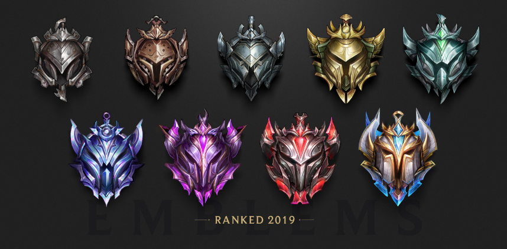
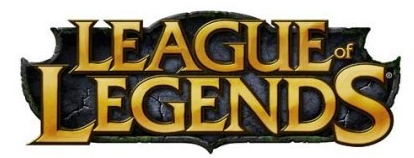

골드를 가기 위한 꿀팁입니다.

한 챔프만 파라
하나의 챔피언만을 주구장창 파면 됩니다.
그리고 라인은 왠만하면 미드나 정글을 가세요. 올리기 쉬운 라인입니다. 원딜이나 서포터로는 올리기 힘들어요
그리고 제발 야스오나 티모같은 소위 말하는 충챔들 하지마세요 하지말라는데는 다 이유가 있습니다. 올라가기 힘들어요 엄청 잘하지 않는이상 그리고 팀원들 멘탈에 영향을 줍니다. 딱 지금 현시점에서 OP챔들중 하나를 잡고 파시면 됩니다.
저는 신드라 추천합니다. 그냥 쌥니다.
롤은 멘탈싸움!
절대 팀원들과 싸우면 안됩니다. 팀원들과 싸우고 싶을땐 아 이판 그냥 졌구나 라고
생각이 들면 싸우시고 왠만하면 시비걸어도 차단하고 게임합시다. 멘탈에 영향을 줘요.
멘탈이 나가면 다음판도 패배로 이어질 확률이 높습니다.
그리고 채금도 먹고 계정정지도 먹을 수 있으니 그냥 차단하세요
라인전
라인전에서는 케바케이긴 하지만 실버에서는 그냥 우직하게 상대가 로밍가면 라인 밀고 포탑 채굴하고 미아핑 찍어주면 됩니다. 괜히 같이 따라갔다가 망할수가 있어요 그냥 쭉 밀고 라인 이득 봐주면 됩니다.
그리고 운영법 같은거는 롤 잘하는 사람 동영상 보면서 배우면 됩니다. 이건 딱히 설명을 못하겠네요
라인전에서 딜교를 이길려면 일단 아까 위에서 말했지만 한챔프만 열심히 파시면 숙련도가 올라가서 이길 확률이 높아집니다. 한챔프만 파세요
오브젝트는 무리하게 먹을려고 하면 안됩니다. 항상 상대 정글 동선 체크하고 상대 라이너들 위치 체크하고 먹어야 합니다. 그냥 먹으려고 하다간 역관광 당할수 있으니 항상 조심하세요.
시야 장악을 무조건 해야합니다. 핑크와드 1개씩은 꼭 사서 다니시고 와드를 적 정글 동선이 보이는곳에 박는것이 좋습니다. 이런것도 롤 동영상보면서 배우시길 바랍니다.
팩트폭행
자신의 실력은 골드이상인데 실버,브론즈,아이언에 있으신가요?
팀운이 엄청 안좋다고 생각하시나요?
아마 당신의 팀원들도 당신을 보며 그렇게 생각할 수 있습니다.
위의 글을 따라하면 아무리 못해도 골드는 갈수있습니다.
그래도 계속 실버이시라면 그냥 잘하는 친구한테 올려달라하세요.